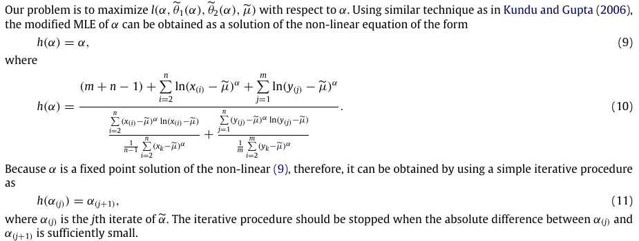

保留供查阅；当前审阅以程序和计算过程的整体呈现为主。这里不接收提交，也不代表任何未定方案已被采纳。
Kundu–Raqab原文研究两组独立Weibull样本，共同形状和位置、不同尺度，并估计R=P(Y<X)。现行mmle.py采用它的固定最小值、删除一个观测、再迭代形状构造，化简为单样本参数估计。
182-119 原文 L25–44 · 原文模型；182-119 原文 L65–88 · 式(4)(6)可称“基于Kundu–Raqab构造的单样本化简”；不能称已经实现整篇双样本应力–强度推断。本文只讨论当前这一套MMLE，不启用其他历史实现。
原文尺度θ用于指数项exp[−(x−μ)^α/θ]，与网站参数的对应是α=β、μ=γ、θ=η^β。
python/methods/mmle.py · L48–52
48 gamma = float(self.data[0])
49 y = self.data[1:] - gamma
50 beta = float(initial_shape)
51 converged = False
52 history = []删除的是一个最小观测，不是删除所有与最小值相同的观测。原文连续模型以严格次序统计量叙述；舍入造成并列最小值时，当前会失败，不能无声多删数据。
当前实现
把两组构造化简为一组保留样本，初值1、绝对步长容差10⁻⁸、预算10000次；用稳定指数权重计算。
python/methods/mmle.py · L59–66
59 weights = np.exp(beta * (logs - logs.max()))
60 weights /= weights.sum()
61 denominator = float(q * (weights @ logs))
62 next_beta = float((q + beta * logs.sum()) / denominator)
63 if not np.isfinite(next_beta) or next_beta <= 0:
64 break
65 difference = abs(next_beta - beta)
66 if iteration <= 3:核对判断：这里的单样本式是化简推导，不是原文直接印出的单样本公式。现有独立剖面得分根测试支持该化简；初值、容差与预算是明确的数值设置。
可能修改：可保留构造和现有停止条件；考虑在同一程序增加最终得分残差及尺度无关的停止诊断。若改变接受标准，须明确会改变哪些成功/失败。
影响：迭代步长小不总能独自证明满足得分方程。增加诊断不必改变返回值；把诊断升级为拒绝条件则需要讨论后验证。
优先增加可核对证据，暂不改变成功集合。
先确定残差归一化及容差，再更新同一mmle.py的停止/失败规则。
当前实现
run返回R²=0.0；代码注释及过程记录明确它是历史占位。页面或导出若按普通R²排序，仍可能误解。
python/methods/mmle.py · L110–110
110 return [beta, eta, gamma, 0., True]核对判断：这是返回契约与呈现语义的问题，不是形状/尺度公式错。原样保留0会有被误用的风险。
可能修改：可以保留兼容字段并带未定义标志，或把R²正式改为null；不能自行补一个“看着合理”的全样本值。
影响：改null涉及结果类型、API、表格、排序及既有导出。若定义保留样本R²，也必须命名清楚，不与全样本指标混用。
新增有效性语义，展示为“未定义”，统计与排序跳过该占位。
使数据本身表达未定义；同步更新API类型、展示、统计和导出契约。
下图为原PDF第4页、印刷1841页的式(9)–(11)及停止条件。原始公式保留双样本，前面用网站符号呈现的是有标识的化简推导。

| 核对输入 | β | η | γ |
|---|---|---|---|
| 既有七点存档样本 | 1.4485886 | 379.27488 | 1095.1525 |
单样本化简的独立得分根对照，非原文双样本R的完整算例。
本轮重新执行七个方法的既有原文/公式套件，共80项通过。通过的是已覆盖的公式、若干算例和边界；不是原文所有算法步骤、数据及蒙特卡洛表已复现。上表为少量确定性核对，不是新蒙特卡洛性能结论。
Debasis Kundu 与 Mohammad Z. Raqab，2009 · Estimation of R = P(Y < X) for three-parameter Weibull distribution
当前方法入口：python/methods/mmle.py。核对时间 2026-11-02T12:51:05+08:00；Git基线 2b3d01383c，工作区含未提交改动，以下哈希标识本轮实际文件。
入口SHA-256 eebc150796acbe565a356c13dc8c9e5ebfd69302870cc1c1b7c63bbf8bf948ec
查看逐项原文与源码摘录 · 查看来源与哈希 · 其他方法
摘录用于本轮讨论，不是另一份可编辑的算法实现。源文件变化后应重新核对；审阅期间不修改估计器或原论文。